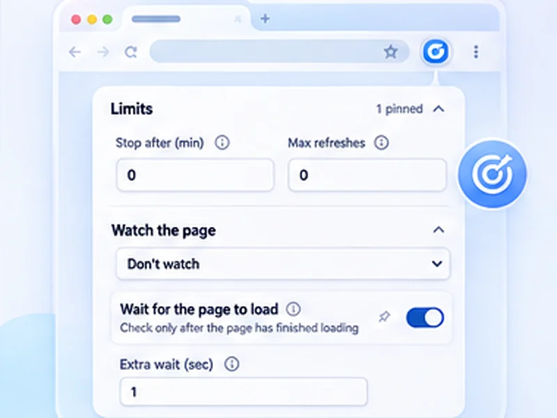

Get told when the build finishes.
Waiting on a deploy or a long job? Get a notification when the page says what you are waiting for.

How builds and queues works
Waiting on a deploy or a long job? Get a notification when the page says what you are waiting for.
Watch for the 'Running' text to disappear instead. That catches both success and failure.
Quick setup
Open the job or status page.
Choose Stop when text appears and type the final state.
Set Min 5 and Max 10, then press Start.
Watch a build, deploy or job page
CI pipelines, long-running jobs and support queues all end with a word: Success, Failed, Complete. Set a watch for that word, switch to other work, and let the notification and flashing tab title bring you back.
One rule for both outcomes
If a job can end in success or failure, watch for the Running text to disappear. That fires either way. On your own tools a five to ten second interval is fine.
Works on internal sites
It runs on any http or https page your browser can reach, including localhost and intranet addresses.
A worked example: a deploy pipeline
The pipeline page shows Running. Choose Stop when text disappears with Running, set Min 5 and Max 10, and press Start. Go back to your editor. When the job ends, in success or failure, the notification arrives and the tab title flashes.
Other pages worth watching
- A support queue, for a new ticket.
- A server status page, for Online.
- A long export or report, for Download ready.
- A certificate or DNS check, for a changed value.
If it stops too early
The word you chose appears somewhere else on the page, or disappears briefly during loading. Use a more specific phrase, or a selector with Stop when content changes.
At a glance
- Alert on a word. Stop when 'Success', 'Failed' or 'Online' appears.
- Short intervals are fine. Your own tools can take a 5 to 10 second refresh.
- Back to work. The tab title flashes, so you notice even from another window.
Questions, answered.
Does it work on localhost?
Yes.
Can it watch a support or ticket queue?
Yes. Use Stop when content changes with a selector for the queue list.
Will it notify me in another window?
Yes, with a desktop notification and a flashing tab title.
Can it restart the build?
No. It only watches and alerts.
Does it work on localhost and internal sites?
Yes, on any http or https page your browser can open.
Let the page check itself.
Use the free extension for Chrome or Firefox.
Have a different use case in mind?
Share the browser task you would like to make easier. Your idea helps guide what gets built next.